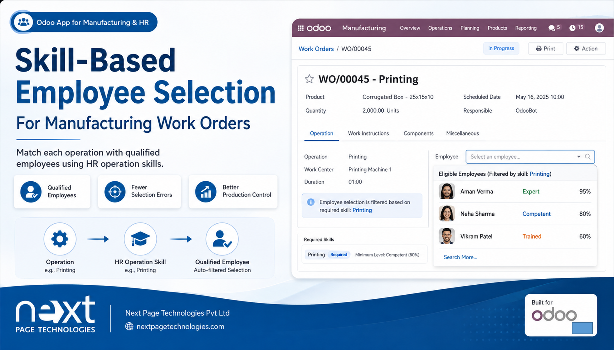
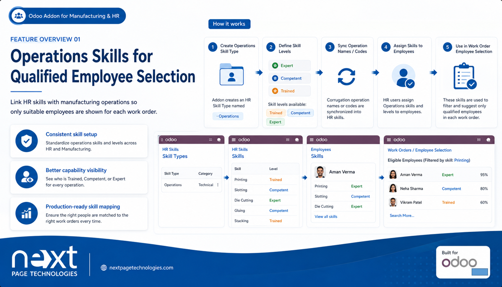
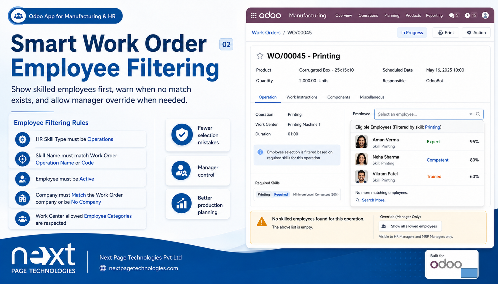

Odoo HR Skills and Manufacturing
HR Operations Skills adds an Operations skill type for employees and uses those skills in Odoo Manufacturing work order employee selection. It syncs operation skills from the corrugation operation engine and helps work orders show employees whose Operations skill matches the selected corrugation operation.
This addon connects employee HR skills with corrugation manufacturing operations. It creates an Operations skill type with skill levels, synchronizes HR skill records from corrugation operation types, and applies operation-based filtering when choosing employees for MRP work orders.
Adds an HR skill type named Operations with Trained, Competent, and Expert skill levels.
Creates missing Operations skills from corrugation operation names provided by the corrugation operation engine.
Limits work order employee selection to allowed employees whose Operations skill matches the work order corrugation operation.
Adds a manager-only option to show all base-allowed employees when no skill-based restriction should be applied.
Ranks matching employees in the work order employee picker by skill level and recent work order performance where available.
Displays a message in the picker when a work order has an operation but no skilled employees are found.
Install the addon with its dependencies, confirm corrugation operation types are available, and assign Operations skills to employees in HR Skills. The addon keeps employee skill assignment manual; it does not automatically assign skills to employees.
The addon adds the Operations skill type and skill levels used to identify employees who can perform specific corrugation operations.

In MRP work orders, employee selection is filtered by work center rules first and then by matching Operations skills when an operation is configured. The picker can also show a manager override option and a hint when no skilled employees are available.

Next Page Technologies Pvt Ltd
https://nextpagetechnologies.com
Next Page Technologies Pvt Ltd
https://nextpagetechnologies.com